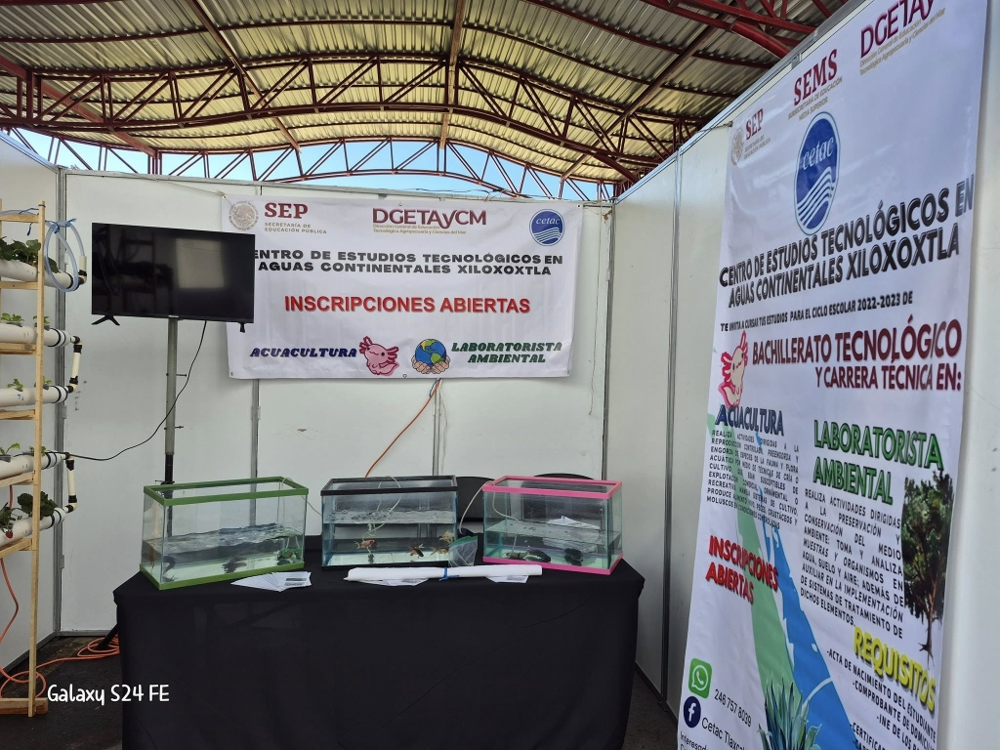
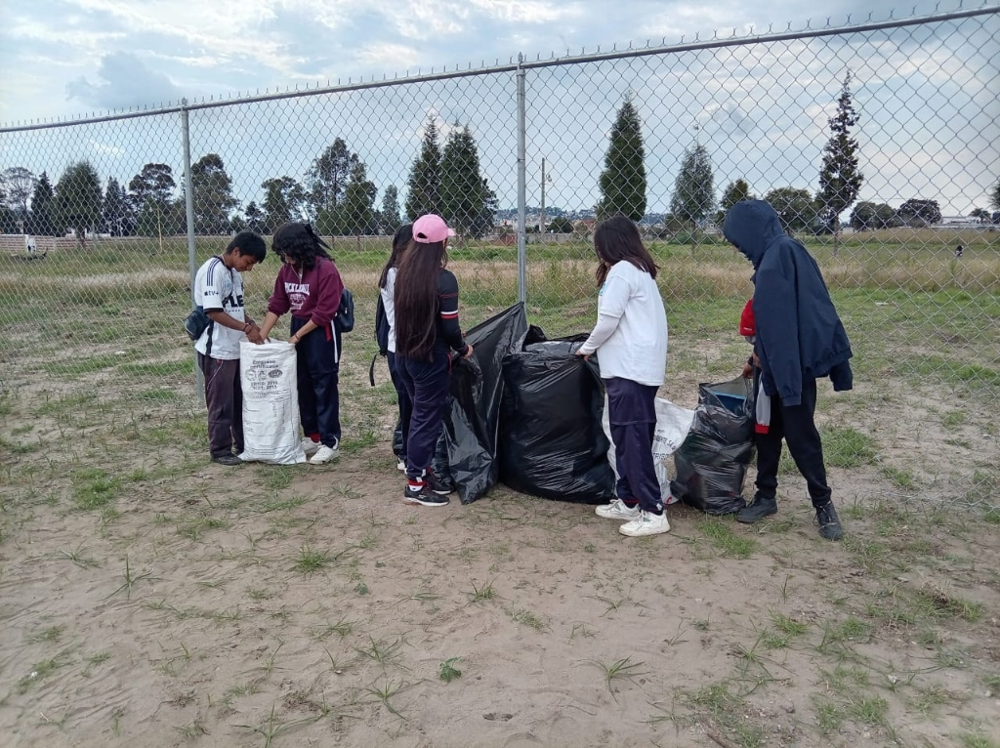
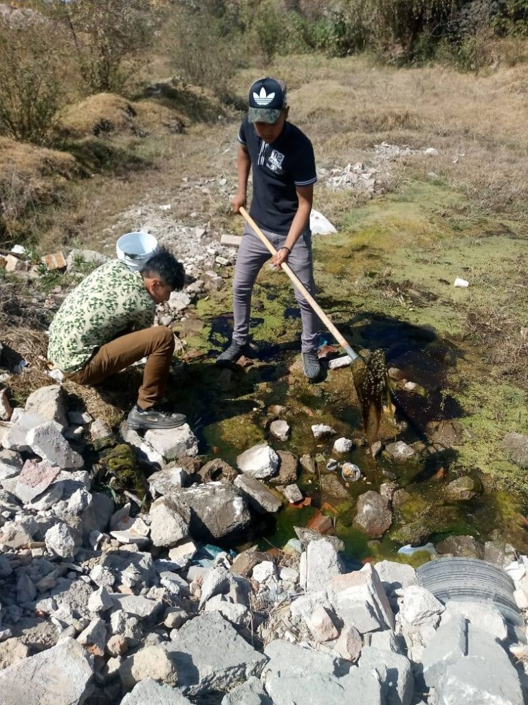

CETAC Xiloxoxtla
Centro de Estudios Tecnológicos en Aguas Continentales
Especializado en proyectos relacionados con recursos hídricos, acuacultura y laboratorio ambiental en la región de Tlaxcala.
Sobre CETAC
El Centro de Estudios Tecnológicos en Aguas Continentales (CETAC) es una institución educativa ubicada en Santa Isabel Xiloxoxtla, Tlaxcala.
Ofrece Bachillerato Tecnológico con especialidades técnicas enfocadas en el manejo y conservación de recursos hídricos, acuacultura y análisis de laboratorio ambiental.
Los estudiantes de CETAC participan activamente en el Programa Aula-Escuela-Comunidad, desarrollando proyectos que contribuyen a la conservación del medio ambiente y la sustentabilidad de su comunidad.
📍 Ubicación
Av. División del Norte S/N, esq. 24 de Junio, Colonia Contla
Santa Isabel Xiloxoxtla, Tlaxcala
🎓 Carreras Técnicas
📞 Contacto Oficial
📧 Email:
cetacxiloxoxtla.tlaxcala@dgetaycm.sems.gob.mx
📞 Teléfono: 246 757 8039
🕐 Horario: Lunes a Viernes, 14:00 a 18:30 hrs (Turno Vespertino)
📍 Dirección:
Av. División del Norte S/N, esq. 24 de Junio,
Colonia Contla, Santa Isabel Xiloxoxtla, Tlaxcala


Proyectos PAEC de CETAC
Contribuyendo a la conservación del medio ambiente
Colecta de PET para la Conservación del Medio Ambiente
Los estudiantes de CETAC participan activamente en la recolección de botellas de PET como parte del compromiso institucional con la preservación ambiental.
- Recolección y clasificación de residuos PET
- Concientización ambiental en la comunidad
- Fomento de la cultura del reciclaje
- Reducción de contaminación en ecosistemas locales

Limpieza y Conservación de Ecosistemas Acuáticos
Estudiantes especializados en recursos hídricos participan en actividades de limpieza y recuperación de cuerpos de agua de la región.
- Limpieza de canales y cuerpos de agua
- Monitoreo de calidad del agua
- Restauración de ecosistemas acuáticos
- Educación ambiental a la comunidad

Galería de Actividades
Nuestros estudiantes en acción
Conoce otras sedes
Explora las demás escuelas del Programa PAEC